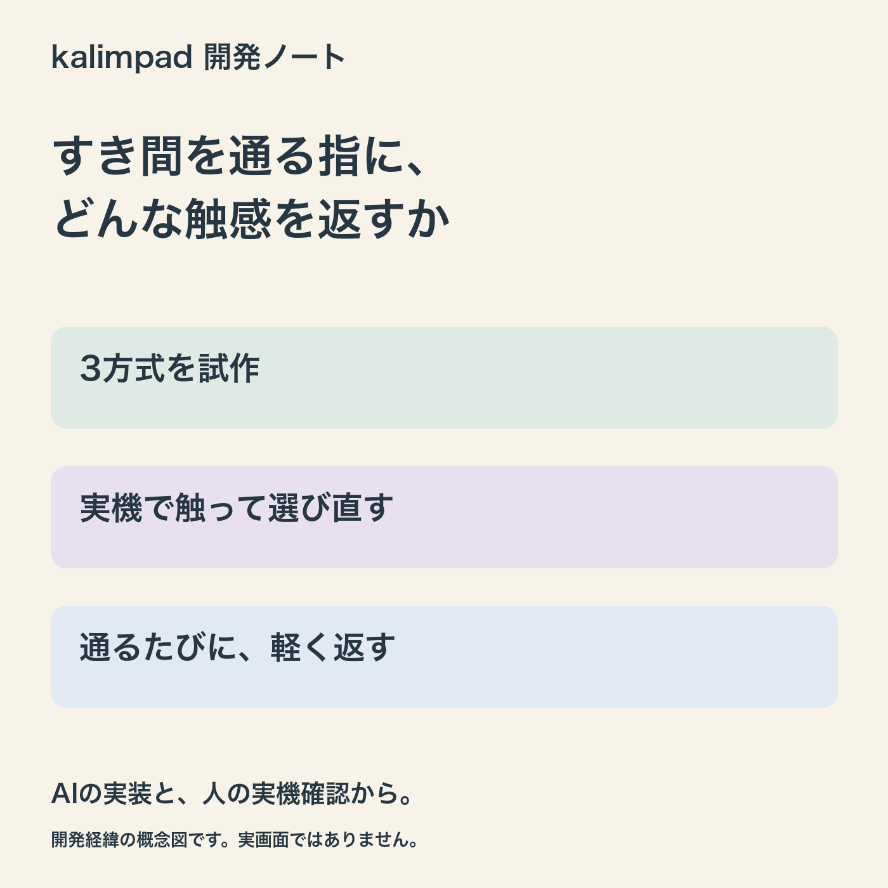

触って決め直したこと
kalimpadの演奏面で、パッドのすき間を通る指にどんな触感を返すか。開発記録には、振動の方式を試し、実機で触った人の反応を受けて選び直した経緯が残っています。
AIが試し、人が確かめる
AIは3つの方式を試作し、強度も調整しました。一方、利用者からは触感が弱いことや、うまくいかないことが報告されました。実装できたという確認だけで、触った感覚まで決まったことにはしませんでした。
続けて震わせる案から、通るたびに返す案へ
AIは、すき間のセルへ入った時に軽い振動を一度返し、同じ場所に止まっている間は繰り返さない試作を追加しました。利用者がこの軌跡に合わせた案を採用した後、通常の振動設定へ統合し、以前の連続振動の試作を撤去しています。
確認できたことと、限界
処理の変更と検査、利用者による案の採用は記録で確認できます。ただし、すべての端末で同じ触感になることや、演奏が上達することを確かめた記録ではありません。ここでの出来事は、AIの試作を触り、人の反応から楽器の手触りを選び直したことです。

